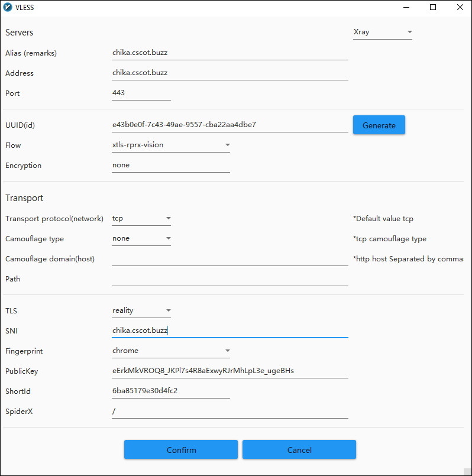

August 21, 2023
This article gives step-by-step instructions for using https://github.com/chika0801/Xray-examples/tree/main/VLESS-XTLS-uTLS-REALITY/steal_oneself. Here the stated SNI of the proxy server is the correct SNI and matches the server's hostname. It will resolve to the server's IP address. This technique may result in a more stable connection in certain countries, provided a whitelisted domain name is not required.
You need to purchase a domain name (e.g. example.com). Point the hostname (e.g. chika.example.com) to your VPS IP address. Wait about 2-5 minutes for DNS resolution to take effect. You can check whether the returned IP address is correct by pinging the hostname you set. For example:
ping chika.example.comOpen ports tcp/80 and tcp/443 in your server firewall.
When using standalone mode to apply for or renew a certificate, the script will listen on port tcp/80. If port tcp/80 is occupied, the script will fail. Therefore nothing else should be listening on port tcp/80.
In the sample commands, replace chika.example.com by your hostname.
Install the ACME shell script:
apt install -y socatcurl https://get.acme.sh | shSet a shorter alias for the ACME shell script:
alias acme.sh=~/.acme.sh/acme.shSet up ACME shell script auto-update:
acme.sh --upgrade --auto-upgradeChange the default Certificate Authority to Let's Encrypt:
acme.sh --set-default-ca --server letsencryptApply for an Elliptic Curve Cryptography certificate for chika.example.com in standalone mode. ec-256 means prime256v1 also known as ECDSA P-256.
acme.sh --issue -d chika.example.com --standalone --keylength ec-256Install the chika.example.com certificate to the /etc/ssl/private directory:
acme.sh --install-cert -d chika.example.com --ecc --fullchain-file /etc/ssl/private/fullchain.cer --key-file /etc/ssl/private/private.keySet the owner and group to work with the Xray server configuration file:
chown -R nobody:nogroup /etc/ssl/privateForce certificate renewal:
acme.sh --renew -d chika.example.com --force --eccGet the latest (beta) version of Xray:
bash -c "$(curl -L https://github.com/XTLS/Xray-install/raw/main/install-release.sh)" @ install --betaGet the latest Nginx from the Nginx repositories:
apt install -y gnupg2 ca-certificates lsb-release ubuntu-keyring && curl https://nginx.org/keys/nginx_signing.key | gpg --dearmor > /usr/share/keyrings/nginx-archive-keyring.gpg && echo "deb [signed-by=/usr/share/keyrings/nginx-archive-keyring.gpg] http://nginx.org/packages/mainline/ubuntu `lsb_release -cs` nginx" > /etc/apt/sources.list.d/nginx.list && echo -e "Package: *\nPin: origin nginx.org\nPin: release o=nginx\nPin-Priority: 900\n" > /etc/apt/preferences.d/99nginx && apt update -y && apt install -y nginx && mkdir -p /etc/systemd/system/nginx.service.d && echo -e "[Service]\nExecStartPost=/bin/sleep 0.1" > /etc/systemd/system/nginx.service.d/override.conf && systemctl daemon-reloadGenerate your own UUID:
xray uuidGenerate your own public and private key:
xray x25519Edit the configuration file:
vi /usr/local/etc/xray/config.jsonModel the contents on https://github.com/chika0801/Xray-examples/blob/main/VLESS-XTLS-uTLS-REALITY/steal_oneself/config_server.json. Put in your generated id and privateKey. Replace the serverNames, making it match your SSL certificate name.
Edit the main Nginx configuration file:
vi /etc/nginx/nginx.confModel the contents on https://github.com/chika0801/Xray-examples/blob/main/VLESS-XTLS-uTLS-REALITY/steal_oneself/nginx.conf. Replace the server_name, making it match your SSL certificate name.
This Nginx configuration includes a block to listen on port tcp/80. Since you are using the ACME script in standalone mode to apply for SSL certificate renewal, please remove or comment out this block. Otherwise, the automatic renewal of SSL certificates every 3 months will fail (because port tcp/80 is occupied by Nginx).
Reference: https://github.com/net4people/bbs/issues/277#issuecomment-1686197062.
systemctl restart xraysystemctl status xraysystemctl restart nginxsystemctl status nginxDownload and unzip the latest v2rayN-With-Core.zip from https://github.com/2dust/v2rayN/releases.
Download and unzip the latest Xray-windows-64.zip from https://github.com/XTLS/Xray-core/releases.
Copy the latest xray.exe binary into your v2rayN-With-Core\bin\Xray folder, replacing the binary it came with.
Launch the v2rayN application, change the language to en (English), exit v2rayN, and restart v2rayN.
Configure the v2rayN client to match your server.
Set v2rayN to System Proxy mode. Test in your browser.